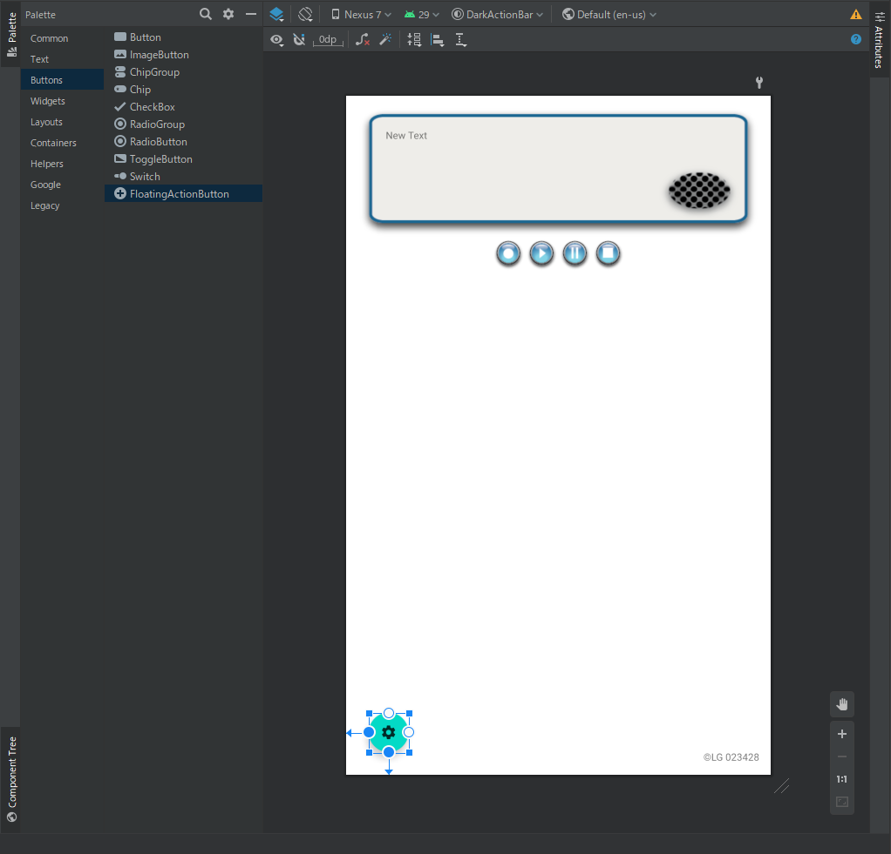

PREPARATION / 準備
第2回のプロジェクト、"LG Action Bar Activity " 、を続けて使用する。
演習問題2_3で作成した以下のActivity と Layout をコピーして、名前を変更せよ。
本日の提出課題一覧
演習問題3_1（必須） 演習問題3_2（必須） 演習問題3_3（必須） 演習問題3_4（任意）
Clickable images / クリック可能な画像
概要
Android搭載デバイスの画面に表示されるユーザーインターフェイス（UI）は、ビュー（View） と呼ばれるオブジェクトの階層で構成されている。 画面のすべての要素はViewである。Viewクラスは、すべてのUIコンポーネントの基本的な構成要素 を表す。 Viewは、Button要素をはじめとするインタラクティブなUIコンポーネントを提供するクラスの基本クラスである。Buttonは、ユーザーがタップまたはクリックしてアクションを実行できるUI要素 です。 ImageView などの任意のViewをタップまたはクリックできるUI要素に変えることができます。ImageViewの画像は、プロジェクトのdrawablesフォルダー に保存する必要があります。
前提知識
テンプレートからAndroidStudioプロジェクトを作成し、main layoutを生成する。
接続されたデバイスでアプリを実行する。
Layout Editor とXMLコードを使用してUI要素を作成および編集する。findViewById() を使用して、コードからUI要素にアクセスする。Button のクリックを処理する。プロジェクトの drawable フォルダに画像を追加する。
この課題で学ぶこと
アクションを実行するためのインタラクティブな要素として画像を使用する方法。
レイアウトエディタでImageView 要素の属性を設定する方法。
onClick() メソッドを追加して Toast メッセージを表示する方法。
FloatingActionButtonの追加
AndroidStudioのアイコンのセットからアイコンを選択できます。次の手順を実行します：
Project > Android パネルで res を展開し、 drawable フォルダーを右クリック New > Image Asset を選択し、イメージアセット設定ダイアログが表示されるダイアログの上部にあるドロップダウンメニューで Action Bar と Tab Icons を選択
「名前」フィールドのic_action_nameを ic_set に変更
クリップアート画像をクリックして、以下の クリップアート画像をアイコンとして選択
Theme ドロップダウンメニューから HOLO_DARK を選択する。これにより、アイコンが暗い色（または黒）の背景に対して白に設定される。Next をクリックする。次のダイアログで 完了/Finish をクリックする。
Layout Editor のデザインモードにおいて、Palette の Buttons カテゴリーから FloatingActionButton を選択し、以下のスクリーンショットと同じ位置におく。

図１．Floating Action Buttonの配置
Activityの追加
前のレッスンで学習したように、アクティビティは、ユーザーが単一の焦点を絞ったタスクを実行できるアプリ内の単一の画面を表す。 InputActivity.java という1つのアクティビティがすでにある。 次に、SetActivity.java という別のアクティビティを追加する。jp.aoyama.a00001.lginputactivity フォルダーを右クリック（またはControlキーを押しながらクリック）して、[新規]> [アクティビティ]> [空のアクティビティ]を選択する。
アクティビティ名をSetActivity に、レイアウト名をactivity_setに編集します。 他のオプションはそのままにして、[完了]をクリックする。SetActivity クラスがInputActivity と一緒にjavaフォルダーにリストされ、activity_set.xml が layout フォルダーにリストされるはず。
Actionの変更
このステップでは、FloatingActionButton のアクションを変更して、新しい Activity を起動する。
InputActivityを開く
設定アイコンをタップした際、SetActivity が開始されるよう、myBtnClick （View view）メソッドに明示的 Intent の作成コードを追加する（else if 文に囲めて）：
Intent intent = new Intent(InputActivity.this, SetActivity.class);
startActivity(intent);
アプリを実行し、設定アイコンを使用する floating action button をタップすると、空白の Activity が表示される（SetActivity ）。
finish() メソッドを使うことで、「戻る」ボタンをタップする際、InputActivity に戻れる。
Toast の作成
このタスクでは、画像・ボタンがタップされた際示すToast メッセージを表示する方法を学ぶ。
string.xml リソースに Toast が表示するメッセージ、"opening user setting "、を用意する。InputActivity を開き、以下の displayToast() メソッドを追加する。
public void displayToast(String message) {
Toast.makeText(getApplicationContext(), message, Toast.LENGTH_SHORT).show();
}
myBtnClick() メソッド内に、作成した displayToast() メソッドの呼び出しを、設定ボタンのクリック時コードに追加し、メソッドの属性に string.xml に用意した文字列が入るようにする。
public void myBtnClick(View v) {
/** 設定ボタンのクリック処理に追加する **/
displayToast(getString(xxxxxxxxx));
}
概要 / Introduction
ユーザーがテキストまたは数字を入力できるようにするには、EditText 要素を使用する。ユーザーがデータを簡単に入力できるようにしている 。たとえば、android:inputType 属性に [phone ] を選択すると、文字キーボードの代わりにテンキーを表示する ことができる。
他の入力コントロールにより、ユーザーは簡単に選択できる。たとえば、RadioButton 要素を使用すると、ユーザーはアイテムのセットから1つ（そして1つだけ）のアイテムを選択できる。
この課題では、属性を使用して画面上のキーボードの外観を制御し、EditTextのデータ入力のタイプを設定する。 また、SetActivity アプリに radio button を追加して、ユーザーが一連のアイテムから1つのアイテムを選択できるようにする。
この課題で学ぶこと
入力方法を変更して、提案、自動大文字化および、パスワードの難読化を有効にする方法
一般的なオンスクリーンキーボードを電話のキーパッドまたはその他の特殊なキーボードに変更する方法
ユーザーがアイテムのセットから1つのアイテムを選択するための radio button を追加する方法
Spinner（スピナー）を追加して、ユーザーが値を選択できるドロップダウンメニューを表示する方法
Radio buttons の利用とイベント取得
Radio buttons は複数の選択肢の内１つのみのオプションを選択 したいとき役に立つ入力コントロール要素です。
Spinnerと比べて、すべての選択肢が一度に見える。 SetActivity に radio buttons を追加するには、まず Layout Editor を用いて activity_set.xml レイアウトに RadioButton 要素を追加する。RadioGroup 内でそれらをグループ化し、グループ化することにより、Android システムは一度に１つのラジオボタンのみを選択できるようにする。
Radio buttons のクリック（選択）イベントを取得するため、通常のボタンと同じく、Layout File 内の各 RadioButton 要素に対して、onClick 属性を設定する（下記例を参照）。
android:onClick="onRadioButtonClicked"
各 radio button 要素の android:onClick 属性において、クリックイベントを処理するため onRadioButtonClicked() メソッドを指定すれば、SetActivity クラスに新しい onRadioButtonClicked() メソッドを追加する必要がある。（下記参照）。
public void onRadioButtonClicked(View view) {
// Is the button now checked?
/** ここで必要なコードを書く **/
// Check which radio button was clicked.
/** ここで必要なコードを書く **/
}
Spinner の利用とイベント取得
Spinner は、セットから1つの値を選択する簡単な方法 を提供する。Spinner をタッチすると、使用可能なすべての値を含むドロップダウンリストが表示 され、ユーザーはそこから1つを選択できる。
電話番号（自宅、職場、携帯電話、その他など）のラベルを選択する方法を提供するために、アプリの SetActivity レイアウト（activity_set.xml ）に Spinner を追加して、電話番号フィールドのすぐ横に表示することができる。activity_set.xml レイアウトに Spinner 要素を追加する。
Spinner の選択結果イベント を取得するため、onClick ではなく、Listener を用いる。
Spinner とそのリスナーをアクティブ化するには、AdapterView.OnItemSelectedListener インターフェイスを実装 する。これには、onItemSelected() および onNothingSelected() コールバックメソッドも追加する必要がある。また、Spinnerオブジェクトに対して setOnItemSelectedListener(this) メソッドを呼び出すことで、そのSpinnerオブジェクトとListenerとなったclassを対応させる。
public class SetActivity extends AppCompatActivity implements AdapterView.OnItemSelectedListener {
//...
protected void onCreate(Bundle savedInstanceState) {
//...
Spinner spinner = (Spinner) findViewById(R.id.spinner);
spinner.setOnItemSelectedListener(this);
//...
}
//...
}
strings.xml を開き、Spinner の選択可能な値（Home、Work、Mobile、およびOther）を文字列配列 labels_array として定義する。
<string-array name="labels_array">
<item>Home</item>
<item>Work</item>
<item>Mobile</item>
<item>Other</item>
</string-array>
Spinner の選択コールバックを定義するには、SetActivity クラスを変更して、次のようにAdapterView.OnItemSelectedListenerインターフェイスに必要な onItemSelected() メソッドを実装する。この例では、空の onNothingSelected() コールバックメソッドにコードを追加する必要はありません。 getItemAtPosition() を使用して spinner で選択したアイテムを取得し、そのアイテムを spinnerLabel 変数に割り当てる。
@Override
public void onItemSelected(AdapterView adapterView, View view, int i, long l) {
spinnerLabel = adapterView.getItemAtPosition(i).toString();
/** Toast 表示コードを追加する **/
}
@Override
public void onNothingSelected(AdapterView adapterView) { }
Bundle について / How to use Bundle
Android には Activityのライフサイクルがあります。Bundle です。BundleはOSの判断で強制的に停止、終了する時に一時的にデータを格納するクラス です。
Bundle 変数 = new Bundle();
変数.putString("キー1", "文字列1");
変数.putInt("キー2", 数字1);
値を受け取る場合は以下の手順で行う。
String 変数 = args.getString("キー1");
int 変数 = args.getInt("キー2");
SharedPreferencesでデータを永続化する / Save the default values in shared preferences
アプリは、ユーザーがアプリを開いたときに、設定ごとにSharedPreferences ファイルに各値を保存する必要がある。比較的小さなコレクションの Key-Value を保存する場合は、SharedPreferences を使用することをおすすめします。
SharedPreferences とは、boolean , float , int , long , String などのデータ型について、キーと値のペアを読み書きできるAPI。キーと値のペアは内部ストレージにxmlファイルとして保存される。初回アクセス以降はメモリ上に展開されたキャッシュからデータを取得するため、高速にアクセスできる。
API名「SharedPreferences 」から誤解されることもあるが、厳密には「ユーザー設定」を保存するためのものではなく、ユーザーのハイスコアなどの単純なデータを保存する際に使われる。たとえば、下記のコードは、リソース文字列 R.string.preference_file_key で識別される共有環境設定ファイルにアクセスして、プライベート モードで開きます。これにより、この共有環境設定ファイルにアクセスできるのは、このアプリだけになります。共有環境設定ファイルに名前を付ける場合、対象アプリを一意に識別できる名前を使用してください。簡単な方法としては、アプリ ID をプレフィックスとしてファイル名の先頭に付ける方法があります。
Context context = getActivity();
SharedPreferences sharedPref = context.getSharedPreferences(
getString(R.string.preference_file_key),
Context.MODE_PRIVATE);
あるいは、アクティビティに対して共有環境設定ファイルが 1 つだけ必要な場合は、getPreferences() メソッドを使用します。
SharedPreferences sharedPref = getPreferences(Context.MODE_PRIVATE);
共有環境設定ファイルへの書き込み。
SharedPreferences.edit() メソッドでSharedPreferences.Editor を作成putInt() や putString() を呼び出し、Key - Value を渡す（*保存したい項目ごとの Key を string.xml で定義する良い） apply() または commit() を呼び出して、変更内容を保存（*apply()は非同期、commit()は同期的にディスクに書き込む）
String user_name_value = ((EditText)findViewById(R.id.editTextName)).getText().toString());
SharedPreferences.Editor editor = sharedPref.edit();
editor.putString(getString(R.string.user_name_key), user_name_value);
editor.commit();
共有環境設定ファイルから読み取る
getInt() や getString() を呼び出し、値に対応するキーを指定する必要に応じて、Key が存在しない場合に返すデフォルト値を指定する（それもstring.xmlで定義すると良い）
String user_name = sharedPref.getString(getString(R.string.user_name_key), DEFAULT_VALUE);
AndroidStudio の Device File Explorer からxmlファイルが実際に保存されていることが確認できる 。Device File Explorer > data > data > xxinputactivity 、の「shared_prefs 」フォルダ内にある。